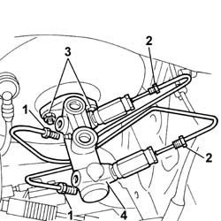

3330C10 (PUMP) - MASTER CYLINDER R.R.
- Path
- Procedures > 33 BRAKING SYSTEM > 3330 HYDRAULIC BRAKING SYSTEM > 3330C brake pump, reservoir and load proportioning valve > 3330C10 (PUMP) - MASTER CYLINDER R.R.
- Kind
- repair procedure (removal / refitting; the operation number is the code)
- Applies to
- all engines; all production periods
- Interactive page
- https://sloeber94.github.io/elrnDB-fPnd/en/#/2752730
Applies to: all engines; all production periods
 Removing
Removing
 Refitting
Refitting3330C30 brake fluid reservoir - r + r and wash inside
5530B56 BATTERY DRIP TRAY COVER - R.R.
5530B52 Battery DRIP TRAY/SUPPORT - R.R.
1048A10 air cleaner filtering element - replace
1. Undo the pipe connectors and front brakes from the pump.
2. Undo the connectors of the pipes to the rear brakes from the braking compensators fastened to the pump.
3. Undo the nuts fixing the master cylinder to the brake servo.
4. Remove the brake pump from its seat.

Applies to: all engines; all production periods
Refitting
RemovingFit the brake pump with brake compensators into its seat on the brake servo.
Tighten the nuts fastening the pump to the brake servo to torque.
 | Fastening | Component | Ø | Value (daNm) |
|---|---|---|---|---|
- | Nut | BRAKE MASTER CYLINDER (PUMP) | M8 | 1.8 |
Tighten the front wheel brake pipe connectors to torque.
| Fastening | Component | Ø | Value (daNm) |
|---|---|---|---|---|
- | Connector | BRAKING SYSTEM FITTING/S | M10 | 1.6 |
Tighten the connectors of the rear wheel brake pipes to torque.
| Fastening | Component | Ø | Value (daNm) |
|---|---|---|---|---|
- | Connector | BRAKING SYSTEM FITTING/S | M10 | 1.6 |
1048A10 air cleaner filtering element - replace
5530B52 Battery DRIP TRAY/SUPPORT - R.R.
5530B56 BATTERY DRIP TRAY COVER - R.R.
3330C30 brake fluid reservoir - r + r and wash inside
0010T64 brake and or clutch fluid check level and top up as necessary
Topics linked from this page (7)
- 0010T64 brake and or clutch fluid check level and top up as necessary
- 0010T65 hydraulic brake system bleed air
- 1048A10 air cleaner filtering element - replace
- 3330C30 brake fluid reservoir - r + r and wash inside
- 5530B10 battery - r+r
- 5530B52 Battery DRIP TRAY/SUPPORT - R.R.
- 5530B56 BATTERY DRIP TRAY COVER - R.R.